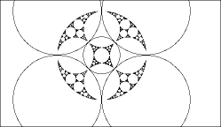
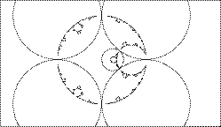
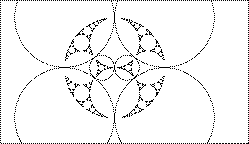
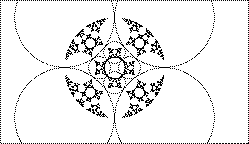

Changing the circles certainly can change the limit set.
| A simple example is made from five circles, with four constant and the fifth shrinking. |  |
These three animations illustrate the idea of fractal motion seen in the first example.
In all three, the fixed circles have radius 1 and centers
at
| In the one moving circle animation there is a single moving circle, of constant radius, staying tangent to one or two of the fixed circles. |  |
| In the two moving circles animation there are two moving circles, of varying radius, staying tangent to one or two of the fixed circles and to one another. |  |
| In the four moving circles animation there are four moving circles, of varying radius, staying tangent to one or two of the fixed circles and to two of the moving circles. |  |
Return to circle inversion fractals.